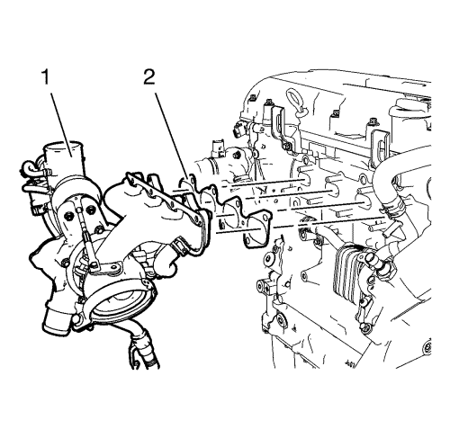
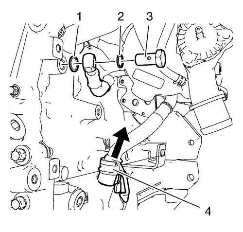
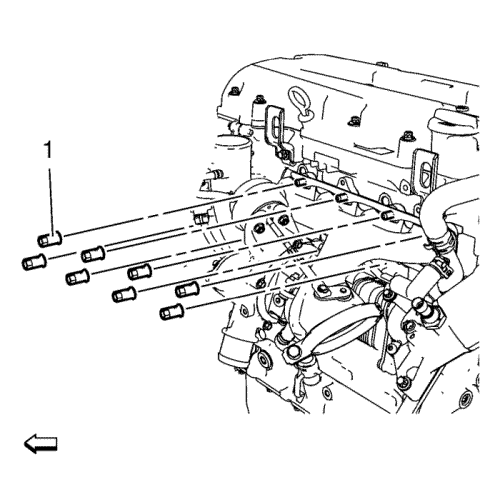
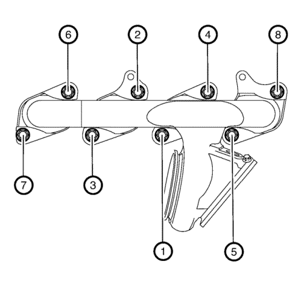
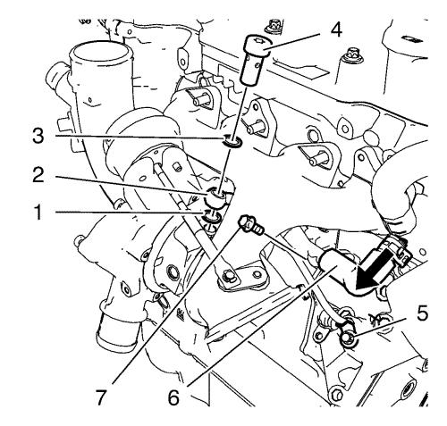
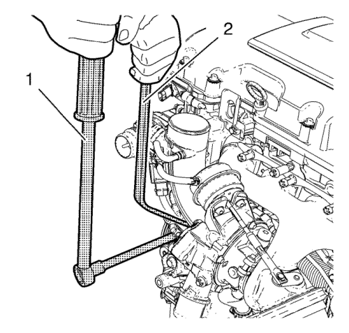
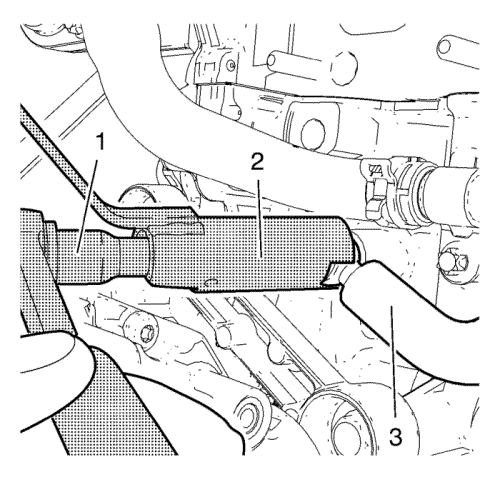

Montaje del turbocompresor
Herramienta especial
EN-49942 Llave de retención
Si desea informarse sobre herramientas regionales equivalentes, consultar Herramientas especiales .
- Limpie las superficies de sellado.
- Sustituya los accesorios de conexión del tubo de alimentación y de retorno de refrigerante del turbocompresor. Consultar Desmontaje del turbocompresor y Armado del turbocompresor .

Nota: Preste atención al tubo de retorno de aceite del turbocompresor.
- Monte el conjunto del turbocompresor (1) y una junta de turbocompresor nueva (2).

- Conecte el tubo de retorno de aceite del turbocompresor al motor mientras monta el turbocompresor.
- Monte el tornillo hueco del tubo de alimentación de refrigerante del turbocompresor junto con los 2 anillos de junta NUEVOS (1) y (2).

- Monte las (8) tuercas NUEVAS del turbocompresor (1).
Precaución:Consulte Precaución con las fijaciones en la sección Prólogo.
Precaución:Consulte Precaución de la fijación del par angular y estiramiento en la sección Prólogo.

- Apriete las 8 tuercas del turbocompresor, en el orden indicado, con 8 N·m (71 lib. pulg.).
- Repita el procedimiento de apriete para asegurar que las tuercas del turbocompresor estén bien fijadas.

- Conecte el tubo flexible de retorno del refrigerante del turbocompresor (6) en el tubo de entrada de refrigerante del radiador de aceite y monte el tornillo (7) del tubo de retorno del refrigerante del turbocompresor en el radiador de aceite. Apriete el tornillo de montaje del tubo de retorno de refrigerante del turbocompresor a 8 N·m (71 lib. pulg.).
- Monte el tubo de alimentación de aceite del turbocompresor (2) con un NUEVO anillo de junta de goma.
- Monte un tornillo hueco en el tubo de alimentación de aceite del turbocompresor (4) junto con 2 anillos de junta nuevos (1) y (3).
- Monte el tornillo del tubo de alimentación de aceite del turbocompresor (5) en el radiador de aceite y apriételo a 10 N·m (89 lib. pulg.).
- Apriete los tornillos huecos del tubo de alimentación de aceite del turbocompresor hasta 30 n·m (22 lib. pie).

Nota: La llave de retención EN-49942 (2) debe montarse en el tubo de alimentación de refrigerante del turbocompresor como se muestra. La llave de retención debe ser montada de forma que el tubo de alimentación de refrigerante del turbocompresor no se doble al apretar.
- Monte la llave de retención EN-49942 (2) en el tubo de alimentación de refrigerante del turbocompresor. Introduzca una llave de trinquete (1) junto con un alargador a través de la llave de retención EN-49942 en el tornillo hueco del tubo de alimentación de refrigerante del turbocompresor.

Nota: La llave de retención EN-49942 (2) debe montarse en el tubo de alimentación de refrigerante del turbocompresor tal y como se muestra. La llave de retención debe ser montada de forma que el tubo de alimentación de refrigerante del turbocompresor no se doble al apretar.
- Apriete el tornillo hueco del tubo de alimentación de refrigerante del turbocompresor con la llave de trinquete y el alargador (1) a 30 N·m (22 lib. pie).
| © Copyright Chevrolet. All rights reserved |